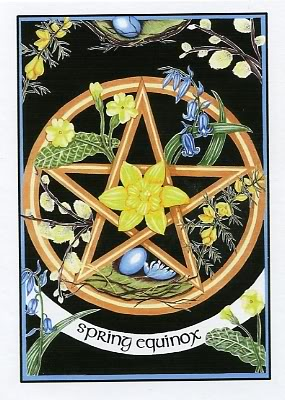
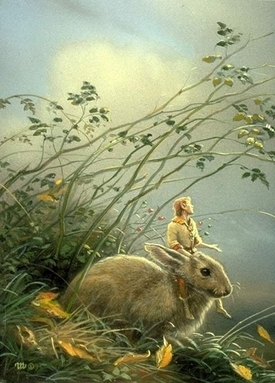

|

"A Light exists in Spring
Not present on the Year
At any other period —
When March is scarcely here
A Color stands abroad
On Solitary Fields
That Science cannot overtake
But Human Nature feels.
It waits upon the Lawn,
It shows the furthest Tree
Upon the furthest Slope you know
It almost speaks to you.
Then as Horizons step
Or Noons report away
Without the Formula of sound
It passes and we stay —
A quality of loss
Affecting our Content
As Trade had suddenly encroached
Upon a Sacrament."
Emily Dickinson
...............................................................................................
El Equinoccio de Primavera se celebra alrededor del 21 de marzo. El Sol entra este día en el signo de Aries y cae directamente sobre el ecuador terrestre, haciendo que el día y la noche duren lo mismo. A partir de este momento notamos con más incidencia que los días están creciendo. La rueda del zodiaco empieza a girar desde el primer signo.
Algunos magos llaman al equinoccio Ostara, pero podría no ser del todo adecuado. Ostara sería más bien la fiesta lunar que se celebra en honor de la diosa Eostre por estas fechas. Pero como Diosa de la primavera no puede faltar en este sabat. Otros prefieren llamar al equinoccio el “día de la Doncella” por reconocer precisamente el aspecto joven de la Diosa.
Al fin y al cabo, tanto el Dios como la Diosa están presentes en esta fiesta solar. Gracias a su unión la Diosa concibe.
Cerca de estas fechas se da la pascua cristiana, la cual conserva las imágenes tradicionales del conejo y los huevos. Algunos cristianos incorporaron a la semana santa el símbolo del conejo al inventar la graciosa historieta que decía que Jesús había compartido el sepulcro con un conejo. El conejo casi se vuelve santo al haber sido testigo del milagro de la resurrección, y de tanta alegría que le dió al animalito, salió repartiendo huevos entre los niños. A la diosa Eostre se la suele representar rodeada de estos animales. Por otro lado, los huevos son un símbolo universal de fertilidad, unión y renacimiento. Hay una leyenda druida que dice que los huevos que se encuentran en este día son huevos sanadores escupidos por serpientes. El 25 de Marzo es el día de la Anunciación, coincidiendo con la concepción de la diosa pagana.
No hay que olvidar que la pascua cristiana tiene su origen en la pascua judía, y ésta a su vez en los rituales de fertilidad que celebraban los pastores nómadas. Para ellos, la primavera, o mejor dicho, el tiempo de transición del invierno a la primavera, marcaba el momento en el que tenían que buscar nuevos pastos fértiless para sus ovejas. En la primera luna llena de la primavera se reunían en el desierto para sacrificar un cordero y así conseguir la protección de los buenos espíritus para su ganado. Cuando el pueblo judío se asentó y empiezó a tomar conciencia histórica, la fiesta de los pastores se unió a la de los agricultores asentados, que consistía en comer pan sin levadura amasado con los primeros cereales de la cosecha. Con el tiempo la fiesta iría transformándose en la celebración de la salida de Egipto.
El huevo para ellos representa el duro corazón del farahón. En Egipto, este momento era el centro del culto a Isis. Y estaba ligado a Sirio.
La energía del equinoccio de primavera promueve el amor, la fertilidad, la esperanza, la felicidad, y las nuevas relaciones. Nos trae fuerzas renovadas para volcarnos al exterior. Dejamos atrás la pereza invernal y todo lo que nos estorba y entorpece.
Aquello que sembramos en Imbolc empieza a manifestarse, aunque encierra todavía mucho potencial...
CORRESPONDENCIAS MÁGICAS:
Elemento: Fuego
Símbolos: La flecha vertical que significa potencia y crecimiento, el círculo en espiral, la semilla.
Talismanes: Bolsas o saquitos con pétalos secos, objetos fálicos, hierro, oro, plata; la cola o pata de conejo como símbolo de fertilidad y objeto protector.
Alimentos: Pipas de calabaza, de girasol y piñones, vegetales verdes, ensaladas, huevos, conejo, coredero...
Hierbas y plantas: Todas las flores de primavera, violetas, iris, olivo.
Incienso: Jazmín, rosa, floral (cualquier tipo).
Piedras y gemas: Jaspe, aguamarina, cornalina
Colores: Rojo y verde.
Actividades típicas: Sembrar, plantar o construir jardines mágicos. Decorar huevos, confeccionar saquitos y amuletos. Limpieza del hogar. Ayuno, dieta depurativa...

|
 RSS
RSS